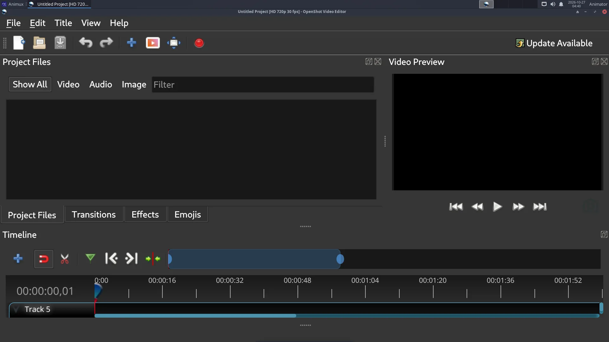
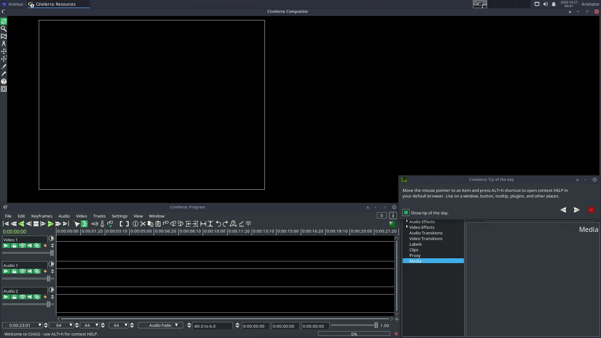
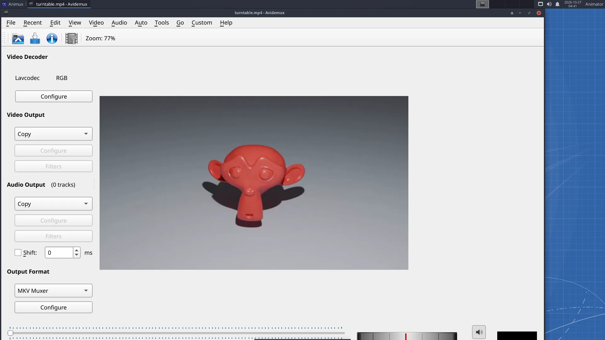
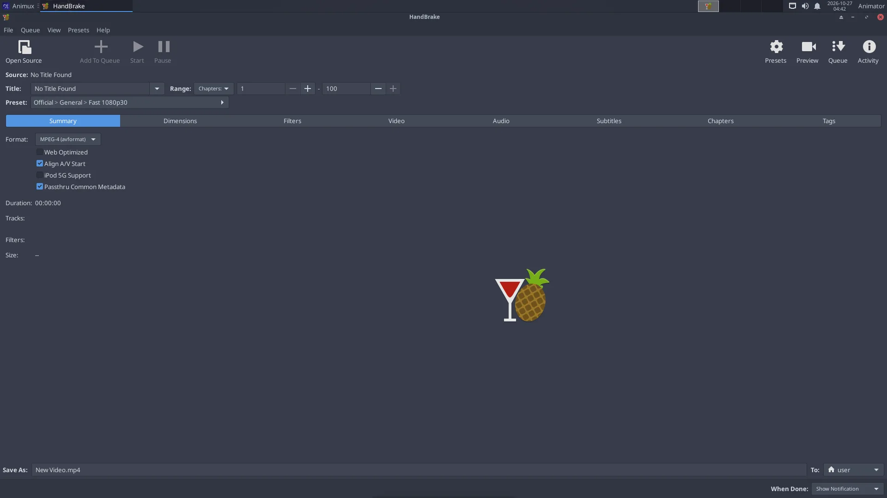
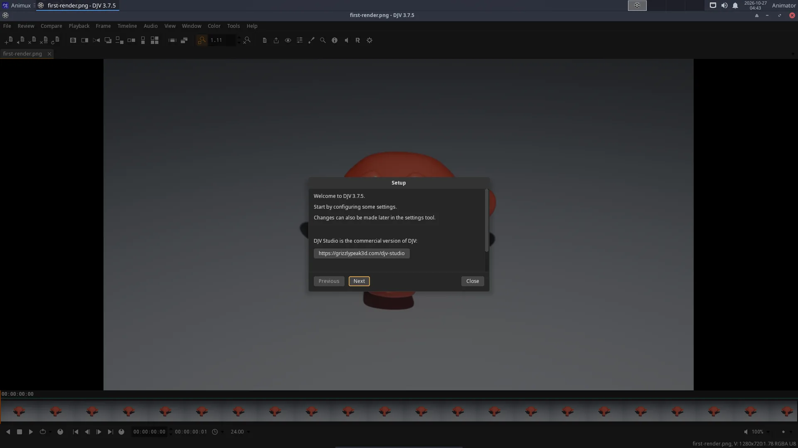

| Program | Use it to | Start |
|---|---|---|
| Kdenlive | edit a film (recommended) | kdenlive |
| OpenShot 2.6 | edit very simply: drag, drop, export | openshot-qt |
| Cinelerra-GG | edit with professional colour grading, compositing, motion tracking | cin |
| Avidemux 2.8 | cut a single file quickly, filter, re-encode | avidemux |
| HandBrake 1.6 | convert a finished film with ready presets | ghb |
| FFmpeg 5.1 | convert anything from the terminal; image sequence → video | ffmpeg |
| DJV 3.7 | play image sequences and EXR renders at true speed, compare versions | djv |
| VLC 3.0 | play every video and sound file | vlc |
| MKVToolNix | combine video, audio tracks and subtitles in one MKV | mkvtoolnix-gui |
| Subtitle Editor, Gnome Subtitles | write and time subtitles | subtitleeditor |
OpenShot#


Import files (Ctrl+F), drag them to a track, press Export Video (the red button). Good for school projects.
Cinelerra-GG#


Cinelerra is very capable but different from other editors (several windows, many options). The manual is at https://www.cinelerra-gg.org/download/CinelerraGG_Manual.pdf.
Avidemux#


Open a video, set A and B markers to select a part, choose Video Output (for example Mpeg4 AVC (x264)) or Copy to keep quality, and File → Save. Copy mode cuts without re-encoding, in seconds.
HandBrake#


Open Source → choose your film → pick a Preset (for example General → Fast 1080p30) → Start Encode.
DJV: review renders and image sequences#


Studios check renders with a player like DJV: it plays image sequences (render_0001.exr …) at the correct frame rate, shows EXR channels and exposure, and compares two versions side by side (Compare menu). File → Open and choose the first frame; DJV finds the rest of the sequence.
FFmpeg: the five most useful commands#
# PNG image sequence → MP4 video (24 frames per second)
ffmpeg -framerate 24 -i render_%04d.png -c:v libx264 -pix_fmt yuv420p -crf 18 film.mp4
# add a soundtrack (stops at the shorter of the two)
ffmpeg -i film.mp4 -i music.wav -c:v copy -c:a aac -shortest film-with-sound.mp4
# make a GIF for the web (480 px wide)
ffmpeg -i film.mp4 -vf "fps=12,scale=480:-1:flags=lanczos" film.gif
# cut 10 seconds starting at 0:05, without re-encoding
ffmpeg -ss 5 -i film.mp4 -t 10 -c copy clip.mp4
# record the screen (stop with q)
ffmpeg -f x11grab -framerate 30 -i :0.0 -c:v libx264 -preset ultrafast screen.mp4
%04d means "four-digit frame number": render_0001.png, render_0002.png… Change it to match your files.
Screenshots and screen recording#
- Print key: screenshot of the whole screen; Alt+Print: the window (Screen Casting → Screenshot for options).
- Record the screen with the FFmpeg command above. OBS Studio and SimpleScreenRecorder are not on the ISO in r16; install them with
sudo apt install obs-studioorsimplescreenrecorder(see Adding software).